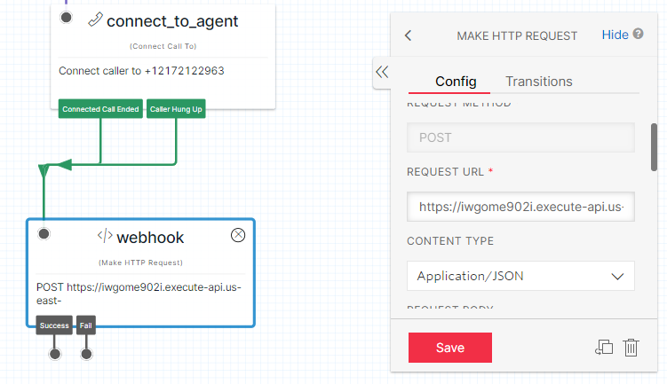

Twilio Integration
1: Twilio Configuration
Step-1: Create Studio workflow
- Login to Twilio console
- From left Navigation Menu, select the Studio option
- Click + icon to configure the new Studio workflow
- New Flow popup will open, enter the name and click on next button
- Then select the option Import from JSON, click next button
- You will be navigated to next screen of text area where you need to paste the JSON
- Paste the JSON in the text area after replacing bearerToken placeholder with the appropriate token value(make sure angular brackets are also removed) and click the Next button
- On the workflow screen, select the Connect to agent widget and change the agent mobile number and click save button

Step-2: Configure workflow and webhook
- From left menu, select the Phone Number option and navigate to Active Number dashboard
- From the list of phone numbers, click the appropriate phone number and navigate to Configuration page
- Under Voice & Fax section, update the values as below screenshot, ensuring that the webhook URL contains the valid token (same url is configured in studio workflow) and save the configuration
2: About Twilio Workflow
Twilio Studio information and overview may be accessed here.
3: Create a Twilio Workflow
Create new flow
- Log into Twilio account and navigate to the Studio Dashboard, then tap the + icon to create a new flow. You can name your flow anything you like.
- You’ll notice that the canvas comes with a widget already in place -- that’s the Trigger widget, which kicks off our flow when the trigger we specify is fired. In this case, our trigger is going to be an incoming call, since we want callers to reach our automated menu.
- We’ll start by dragging a Gather Input on Call widget onto the canvas, and connecting it to the Incoming Call trigger by dragging the red dot to the grey dot in the corner of the new widget. We can use this widget to specify what we want the menu to say when the caller picks up. In this example, we’re going with “Hello, How can we direct your call? Press 1 to talk to agent, Press 2 to leave voice message.” but you can enter any message of your choosing, or select Play a Message from the dropdown to play an audio file instead.
- We want to route sales calls to agent, so we’ll need some logic that will help us know which one the user wants to connect to. We’ll use the Split Based On... widget to help handle that. Drag it onto the canvas and connect it to the dangling User Pressed Keys dot from our Gather widget.
- Next, we’ll need to declare the choices we’re looking for in those key presses -- the digits 1 and 2. Tap the red New at the bottom of the Split widget to reveal the Transition On... dropdown menu. Select Condition Matches to create a new Transition.
- We’re going to need to connect those calls to agent, and the way to do that is with the Connect Call To widget. Drag those onto the canvas. You’ll need to enter the Phone To Call for each -- do this by tapping on the widget and editing the field in the right sidebar to reflect the correct numbers for agent (the default number will be the one the user called from, so we’ll need to override this).

- Also in the connect to agent configuration enable call recording and timeout seconds to disconnect if agent doesn’t pick up the call.
- Now in split_based_on_key widget if no condition matches then use say play widget and connect this to no condition matched of split based on key widget.
- In say/play widget edit the configuration and enter the message that you want to play, eg we used ‘Sorry Invalid choice, please try again’.
- After the say/play message completed we want again the input from user so, match the AutoComplete of say/play with gather_input widget. (Here we can choose whatever we want according to our requirement like disconnect the call or send message to caller, etc. Now after the connect_to_agent widget, when the call ended or the caller hang up the call in both the cases we want to send recording url with some other metadata to the aws lambda configured. So here we will use Make HTTP request widget after this and named it as webhook. This will send the POST request to the url mentioned in widget with all the payload that we will set. 
- Enter the URL, content type and request method in configuration.Then for the metadata payload that we want to send, enter it in request body:
 the values can be used from various widgets used likewise
recordingUrl from connect_to_agent widget so value will be like
the values can be used from various widgets used likewise
recordingUrl from connect_to_agent widget so value will be like
- After all the changes are completed, PUBLISH the WORKFLOW and then use it in any mobile number like this
- To export a workflow from studio as a JSON, open the workflow then click on the first default widget i.e. TRIGGER. Under the config section of widget, scroll to bottom and click on SHOW FLOW JSON. Copy the whole JSON and save it.
- To import a workflow from JSON, select import from JSON option while creating a new Workflow and use the json you saved earlier: